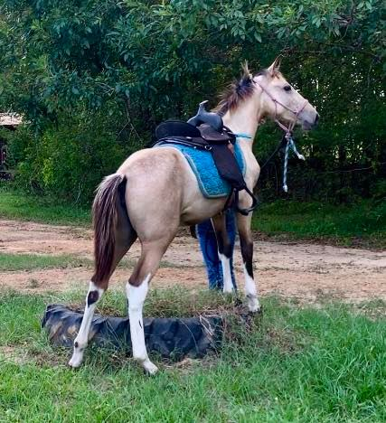

Meet our Horses!
|
Angel
Gorgeous rare mahogany bay tobiano 5-1/2 year old Tennessee Walking Horse mare, bred, raised and trained right here on our farm. (We also raised both her parents!) Angel loves people and pretty much comes in from the pasture, puts her head in the halter to be led back to the barn. $6,850 |
 |
|---|---|
|
Buckshot
Drop dead gorgeous dappled buckskin 4-year-old 15H gelding with smooth, floating gait -- home bred, raised, trained. |
|
|
JW
Beautifully marked, head full of sense, big boned, wide chest, big rump, one nice Tennessee Walking Horse colt! He is Jackpot's 'uncle', born out of Jackpot's granddam, Kitty. This is going to be one sane, gentle, family-type horse that will be rugged enough for the biggest man, and gentle enough for the youngsters in the family. $2,500 |
 |
|
Sadie
beautiful big-boned, stocky, sweet, four-beat-gaited buckskin tobiano Tennessee Walking Horse mare with excellent bloodlines and natural sure-footed athletic ability. This filly's parents are all proven on the trail and some even in the show ring. No sloppy pacing in her background and you can see in the videos on this page how natural and easy she gaits. $2,500 |
 |
|
Farley
born in Virginia, brought to Texas as a weanling, raised in the piney woods of East Texas, not started under saddle until he was 5 years old, he is a direct son of the famous speed racking stallion Rowdy Rawhide (by the legendary EZD Falcon Rowdy) and out of a registered Standardbred mare. Farley has a beautiful compact, sturdy build with wonderfully hard, healthy hooves, a sloping shoulder, a round hindquarters and a gorgeous tiny head. $7,500 |
 |
|
Tomahawk
Smooth, smooth, smooth! Beautiful sorrel roan tobiano spotted saddle horse gelding with the most awesome, perfect four beat gliding gait. He will shake his head and walk like a Walking Horse, and he will rise up in the bridle and float along in a single foot racking gait, as well. Then, there's that nice, easy athletic fairy tale rocking chair canter. $15,000 |
 |